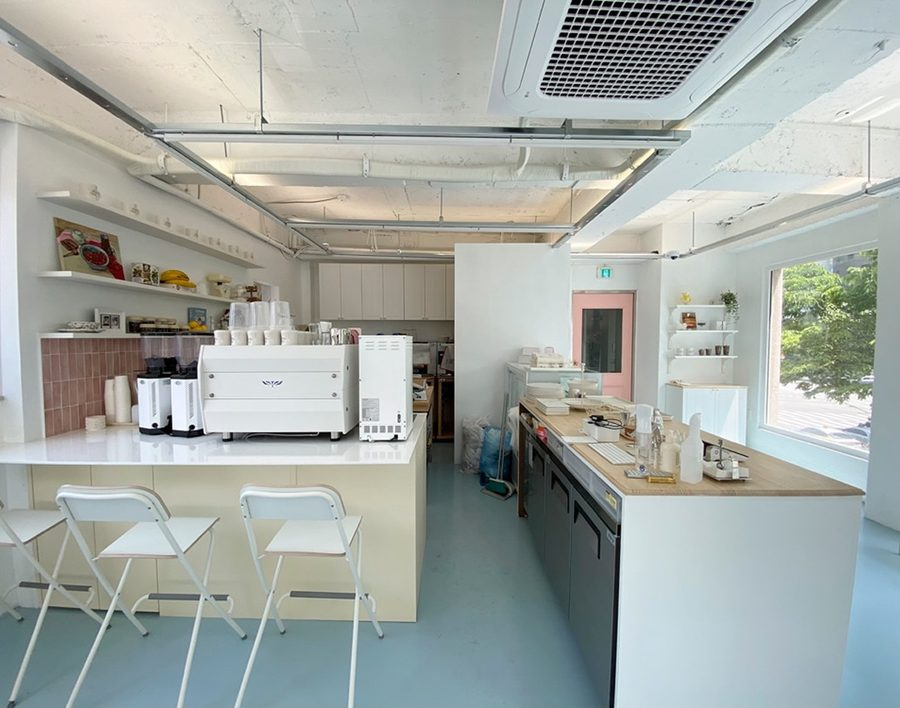

화이트 + 파우더 블루 바닥 + 월넛
카페 주방·바 카운터 — 밝고 위생적인 인상
면적 배분
쿨 화이트 55% · 파우더 블루 25% · 다크 월넛 20%
영상·원문에서 확인된 내용
사진 속 흰 벽·흰 카운터·흰 집기에 파우더 블루 바닥과 월넛 선반·집기가 놓인 구성. 왼쪽 벽에는 블러시 핑크 타일이 작은 면적으로 들어가 있다. 슬라이드에 세 HEX가 그대로 적혀 있다.
현장 응대 포인트 (제일페인트 실무)
원본 피드 보기 · 큐플레이스 (qplace_interior) →
바닥에 색을 넣는 배색은 매장·카페에서 가장 효과가 크지만, 도료로 낼 때는 에폭시 또는 우레탄 바닥재로 가야 발소리·스크래치·물걸레에 버팁니다. 파우더 블루는 무광(광택 10% 이하)으로 떨어뜨려야 사진처럼 부드럽게 보이고, 광택이 서면 얼룩이 그대로 비칩니다. 월넛 톤은 칠이 아니라 투명 착색(스테인)이나 우드 필름이 정답에 가깝습니다.